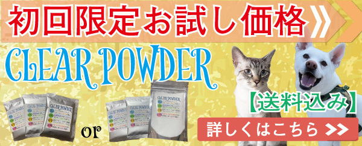

麻の生地や素材の
汚れやシミを落とす

愛犬・愛猫のベッドや洋服には麻の生地や素材が使われている用品もあります。
シミや汚れがついて綺麗にしたくても、塩素系漂白剤だと繊維がボロボロに傷めてしまうことも。
そんな麻の生地や素材にも使えるCLEAR POWDERにてシミや汚れを綺麗にしていきます！
今回の黄ばみの原因としては、愛猫達の足跡汚れと、仕上げにオシッコ攻撃をくらいました・・・。
なので退治したい部分としては、黄ばみ汚れを白く綺麗に＆オシッコの臭いを消臭！！
CLEAR POWDERにお任せあれ🌟
CLERA POWDERの
優しい秘密
CLEAR POWDERには界面活性剤や重金属などは含まれておりません。
主成分の過炭酸ナトリウムは自然界に存在するナトリウム・炭素・酸素・水素になります🌟
食品に使われる重曹と同じ構成になり、健康や環境に害を及ぼす成分を使用しておりません。
酸素の力や、アルカリの性質により汚れを落とすので、生地を劣化させることも少ないのです🌟
早速希釈して汚れや、臭いにスプレーしていきましょう！
麻生地のハンモックに
足跡汚れとオシッコ攻撃
CLEAR POWDERの希釈に関しては、目安として100mlに対して1g〜3gとしておりますが、汚れや臭いに応じて濃度を調節していただいて大丈夫です★
僕自身はせっかちな性格なので、早く効果が出てほしく濃いめで使うことが多いです。笑
今回は100mlに3gでの希釈で使っております★
汚れや臭いがなかなか落ちない、しつこいという場合は濃度を濃くしてお使いください★
スプレーするだけでも良いのですが、汚れと溶液を馴染ますことで汚れを乳化させ、さらに効果的になります。
浮かした汚れを
乾拭きして絡めとる
汚れも臭いも
綺麗さっぱり！
しつこい汚れや、臭いに関しましては放置時間を長くしたり、もう一度同じ過程を繰り返したり、スプレーをかけて放置を繰り返してください★
麻の生地にも使える優しい成分なので、何度かけても劣化させることは少ないのでご安心ください！
青色と白色のストライプ柄で、色物・柄物であっても色落ちすることもほとんどありません。
スニーカーとか色染めが弱いものは抜けちゃうこともありますが😅
綺麗になった
寝床は最高ね
さっそく綺麗になった麻のハンモックにパルフェがやってきました😂
不衛生な環境は人間だけでなく、愛犬・愛猫にも影響を与えます。
定期的に汚れや、臭いを取り除いて綺麗を保ちましょう！


CLEAR POWDERが初回限定でお得に！